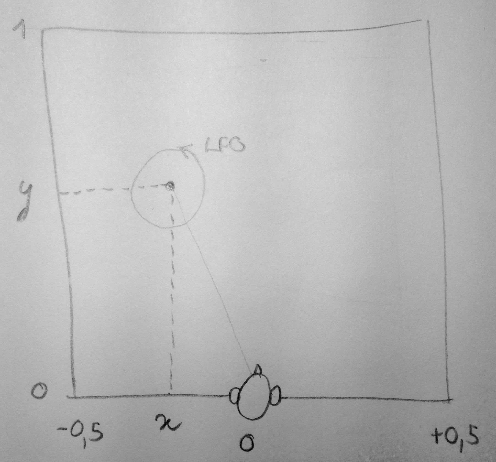

Warps Parasite
Warps Parasite is an alternative firmware for Warps. It adds the following features to the module:- An easy interface to switch between 9 modes, each determining a different function for the module. The stock mode (morph between algorithms) is now called Meta-mode, and is only one of 9. The easter egg (frequency-shifter) is another.
- Most modes take the stock algorithms and go deeper into them, with two dimensions of control instead of one; some are completely new functionalities.
- New features include: a dual chorus/flanger/slapback, a binaural panner with doppler-effect simulation, a dual bit-mangler, a Chebyschev waveshaper.
Consequently, all features of the official firmware are left untouched and still accessible (with the exceptions mentioned below).
A musical demo of the different modes (thanks to davidh):
Download and install
Click on the button to download the latest stable version, ready to play to your module:
Download latest version (v0.95)
Once you downloaded the file, unzip it and follow the Firmware update procedure in the official manual. This firmware is entirely free, but it is the result of months of work; if want to support it, please consider donating, even a small amount, for the past and the upcoming efforts.
Documentation
For full documentation, please see the user manual of Warps. I present hereafter only the features added/modified.
Mode-switching interface
Warps can be in 9 modes. The behavior of the stock firmware is preserved, it is the last of these modes.
Warning: Right after updating the module, you will be in a different mode than the one you are used to, and you might not recognize the sounds coming out. Please read on before calling for help.
To switch modes, hold the button and turn the big knob. Each of the icons on the panel corresponds to a function; the big knob's color reflects the selected mode. Release the button to enter this mode.
Note: There is no interpolation/crossfading/morphing between these modes. There is no CV control over mode selection.
In all modes, each CV input is added to the corresponding knob. Unless otherwise noted, the button and Aux outputs act as in the stock firmware (control the internal oscillator).
From left to right, the new modes are:
- Binaural Doppler panner:
(see below) - Wavefolder:
- Big knob: amount of folds
- Small knob: input bias (gives access to different and subtler timbres)
- The button switches the internal oscillator; Aux outputs the mix or the internal oscillator (default behavior)
- Ring modulator:
- Big knob crossfades between digital and analog ring-mods
- Small knob: soft-clipping
- The button switches the internal oscillator; Aux outputs the mix or the internal oscillator (default behavior)
- Frequency shifter: (the stock firmware's easter egg)
- Big knob frequency shift
- Small knob: crossfade between up/down outputs
- Tiny pots: feedback and dry/wet
- Outputs: up and down
- Dual bit-mangler:
- Big knob input bit-degradation amount.
- Small knob: cross-modulation. Morphs between dry, bitwise AND and bitwise XOR.
- The button switches the internal oscillator; Aux outputs the mix or the internal oscillator (default behavior)
- Note: the Aux output is also affected by the bit degradation, so you can use this feature on the two channels, in stereo.
- Comparator with Chebyschev waveshaper:
- Big knob morphs between 8 analog-like comparison functions, starting with the mix of both inputs.
- Small knob: order of the Chebyschev waveshaper. A Chebyschev waveshaper shapes the signal with Chebyschev polynomials. It has the effect of shifting harmonics non-linearly by whole octaves, and gives interesting timbres out of simple ones. Fully CCW, the sound is unaffected.
- The button switches the internal oscillator; Aux outputs the mix or the internal oscillator (default behavior)
- Vocoder:
- Big knob frequency warping
- Small knob: release time
- The button switches the internal oscillator; Aux outputs the mix or the internal oscillator (default behavior)
- Chorus/Flanger/Slapback:
(see below) - Meta-mode (the stock firmware's main function)
Binaural Doppler panner mode
This mode recreates the physical effect of listening to a moving sound source, with two fixed, opposing ears separated by a few centimeters (which happens to be my situation).
First, the ear that is closer to the source will get the signal a bit before and a bit louder than the other ear; this is known as binaural effects and help the brain to locate a source. Secondly, the further the source is, the more time it will take to reach our ears: there will be a delay due to the speed of sound. Finally, if the source is getting closer, its apparent pitch will be higher; if it is getting farther, its pitch will be lower (think of the sound of an ambulance passing in front of you); this is known as the Doppler effect.
The two knobs determine the coordinates of the sound source with respect to the listening head:
This mode simulate these effects. It can also be used as a dual cross-fader, or a panner, or a simple delay, or a VCA... but it is not where it will shine.
- the Big knob sets x coordinate of the source.
- the Small knob sets y coordinate of the source.
- the Tiny pots control a built-in LFO modulating the source's position on a circle around the center (technically there are two LFOs in quadrature, modulating respectively x and y). The first is its frequency, the second is its amplitude.
- the Two outputs should be used as a stereo pair, obviously.
- Input 1 is one sound source; Input 2 is another source that is placed symmetrically to Input 1 on the other side of the head's axis.
The state of the button determines the size of the space: from a tiny space (LED unlit), where the Doppler effect and the delay and attenuation of distant sound is minimal, to a huge one (LED red).
Chorus/Flanger/Slapback mode
This mode simulates classic effects that can be achieved with a small delay line.
- the Big knob sets the delay time, from sub-audio to about 200 ms.
- the Small knob sets the amount of feedback. Fully CCW, you'll have only the dry sound.
- the Tiny pots control a built-in LFO modulating the delay time. The first is its frequency, the second is its amplitude.
- Unlit: open feedback loop. In 1 is the input, Out the output. Aux is the feedback output and In 2 is the feedback input.
- Green: dual delay. In 1/Out are one channel, In 2/Aux are another. They share the same delay time.
- Orange: dual analog-modeled delay. My modest take on tape delay simulation. The feedback path goes through LP/HP filters and a light distortion; a tad of hiss is also added.
- Red: ping-pong delay. Channel 1's feedback goes into Channel 2, and conversely. Lovely in stereo.
Miscellaneous
- To avoid entering calibration mode when switching mode, the time to enter calibration has been extended to 8 seconds.
- In Meta mode, the volume of the wavefolder has been lowered a bit, and its phase inverted (avoids phase cancellation in between the two first modes).
- The volume of the vocoder has been raised a bit.
Changelog
| Version | Date | Changes |
|---|---|---|
| v0.95 | 2016-01-31 |
|
| v0.9 | 2016-01-31 | Minor fixes and adjustments |
| v0.9beta1 | 2015-12-28 | Initial version |